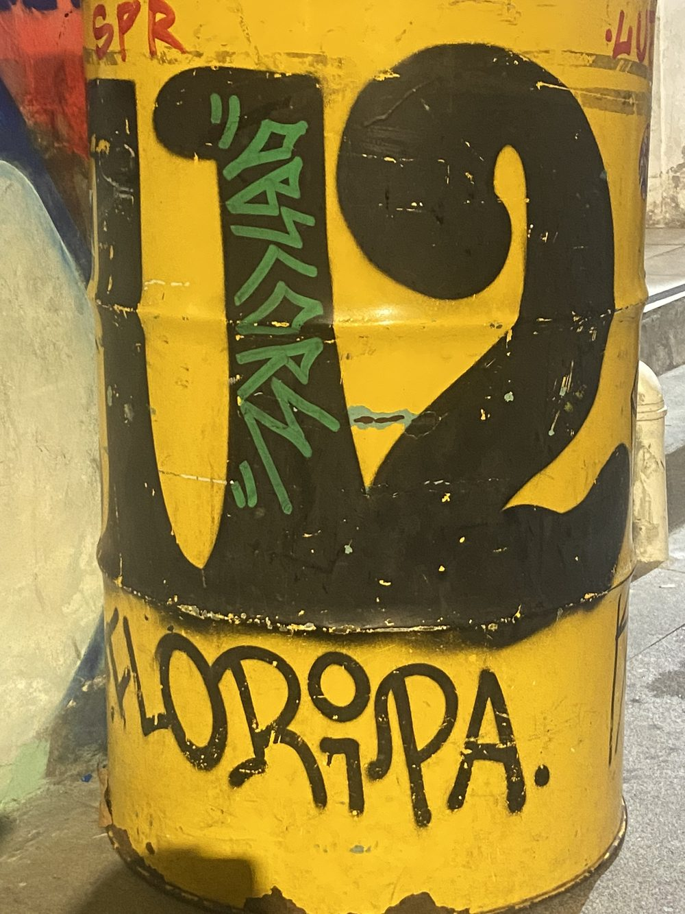
Santo Antônio de Lisboa: The village on the island's north-west coast was founded in the 18th century by settlers from the Azores – cobblestones, colonial houses, fishing boats. Today it is known above all for oysters: Santa Catarina supplies most of Brazil's oysters, and the baskets hang in the bay right off the shore.
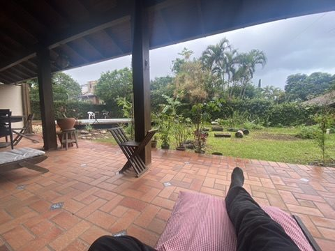
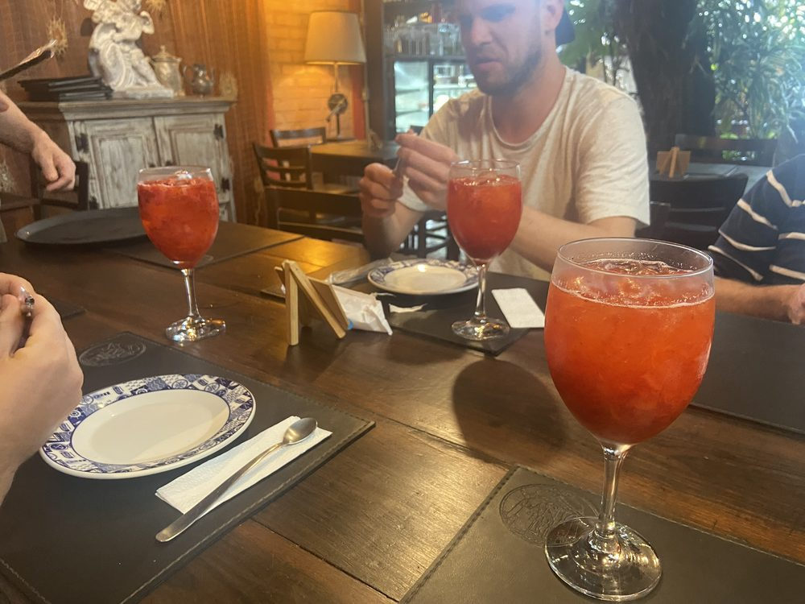
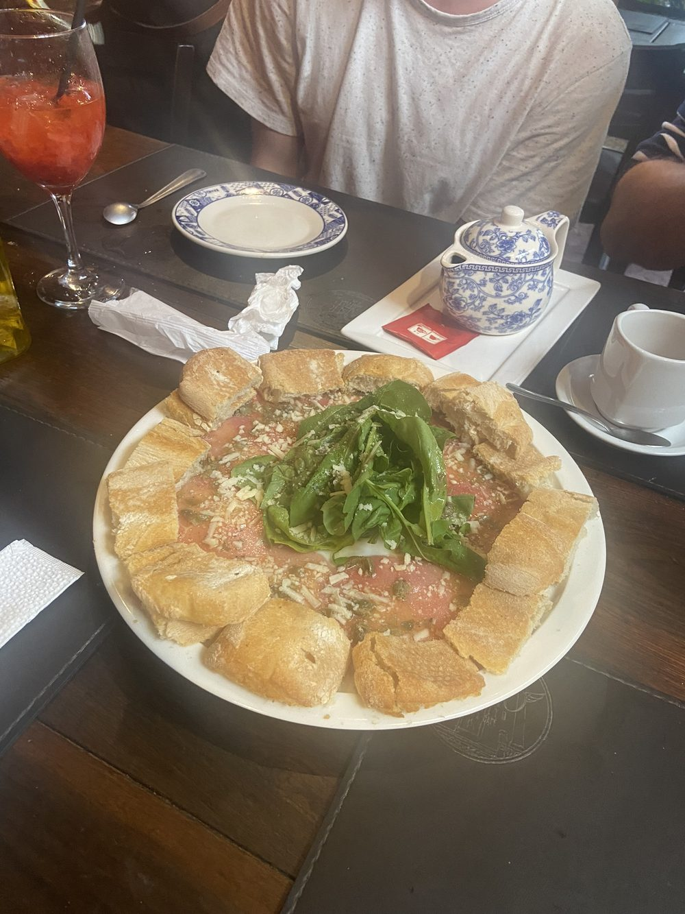
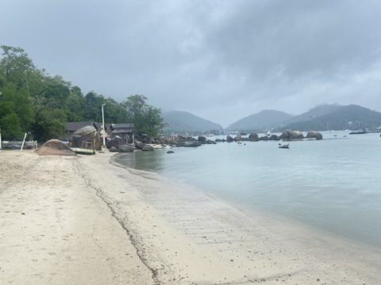
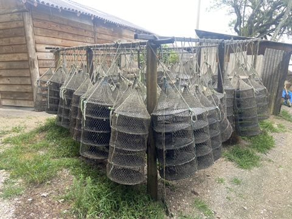
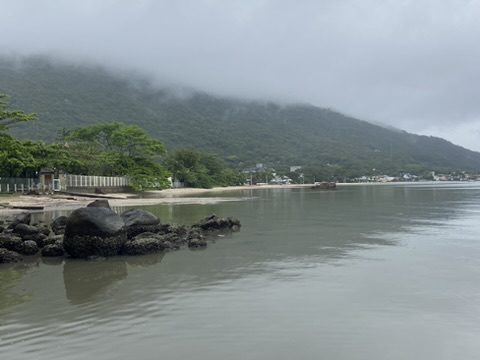
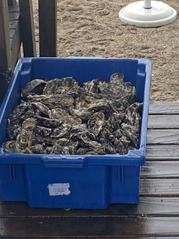
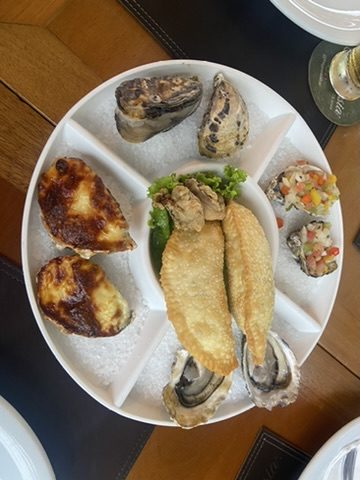
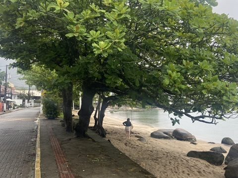
Lagoa da Conceição: The island's nightlife centres on the lagoon. The weekend gets long accordingly – and Sunday correspondingly quiet.
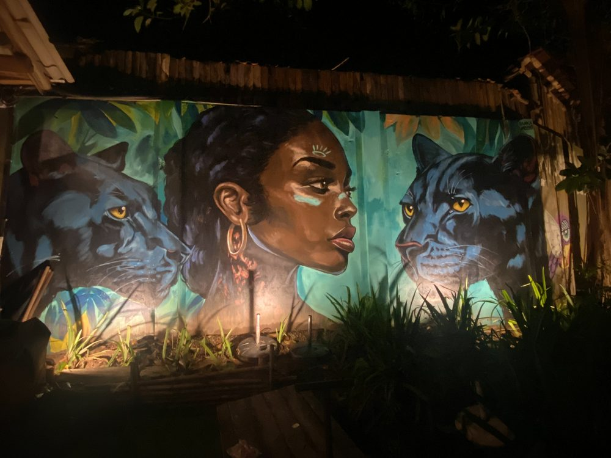
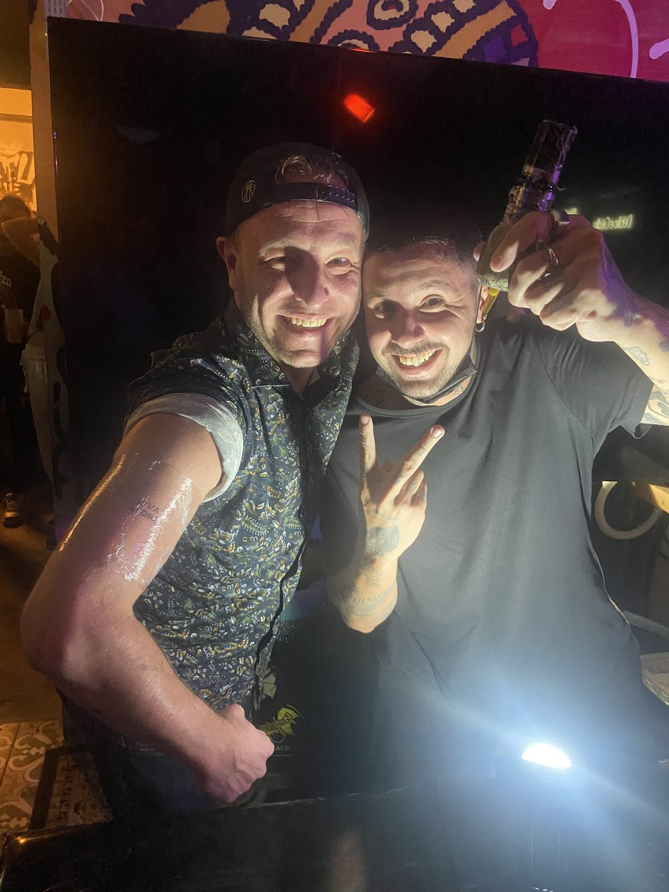
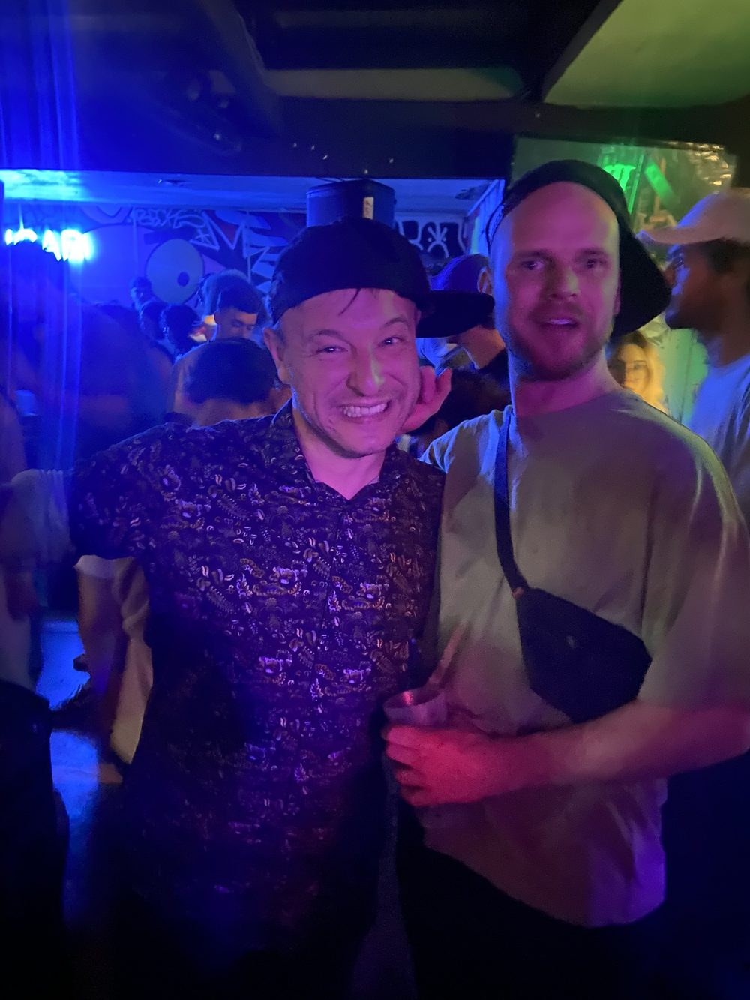
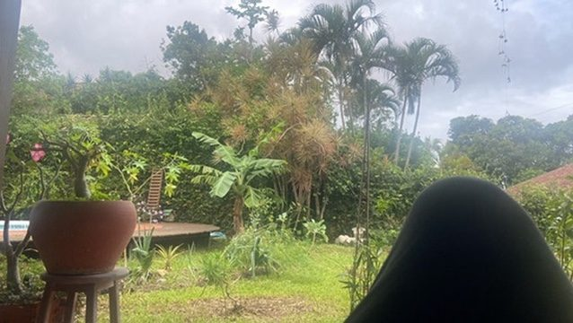